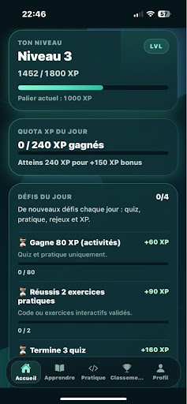
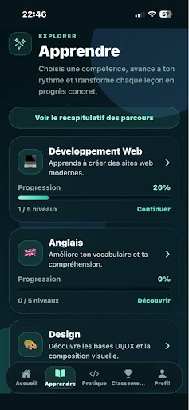
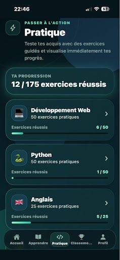
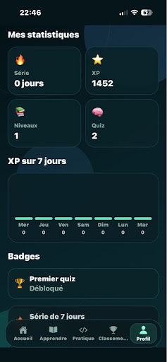

Comptes utilisateurs
Inscription et connexion permettant à chacun de retrouver son espace et sa progression.
Une application d'apprentissage gamifié qui transforme la progression en expérience motivante, accessible sur mobile comme sur le web.
Une interface mobile pensée autour de la progression, des objectifs quotidiens et de la pratique.



Une application pensée pour rendre l'apprentissage plus engageant, plus concret et plus régulier.
SkillUp est une application web et mobile qui rassemble plusieurs formats d'apprentissage dans une seule expérience. L'utilisateur peut créer un compte, répondre à des quiz, réaliser des exercices et suivre sa progression.
Le projet associe une interface React Native compatible avec le navigateur à une API Node.js et une base de données MySQL. Les comptes, les résultats et la progression sont ainsi conservés en ligne.
Quelques écrans réels de SkillUp : progression, apprentissage, pratique et statistiques.

Chaque fonctionnalité participe à une expérience d'apprentissage simple à prendre en main.
Inscription et connexion permettant à chacun de retrouver son espace et sa progression.
Questionnaires pour évaluer ses connaissances et visualiser ses résultats.
Mise en application des notions découvertes dans les différents contenus.
Objectifs réguliers pour encourager la pratique et entretenir sa motivation.
Récompenses et classement qui rendent la progression plus visible et stimulante.
Synchronisation des données avec une API et une base de données distantes.
Adapter une application React Native pour qu'elle soit également utilisable dans un navigateur.Solution : configuration d'Expo Web et adaptation des composants au fonctionnement multiplateforme.
Éviter que les comptes et les résultats disparaissent entre deux connexions.Solution : liaison de l'application à une API Node.js et à une base de données MySQL.
Rendre le projet consultable sans démarrer manuellement un serveur de développement.Solution : publication de la version web et hébergement du serveur sur Railway.
Testez l'application directement depuis votre navigateur ou échangeons autour de sa conception.